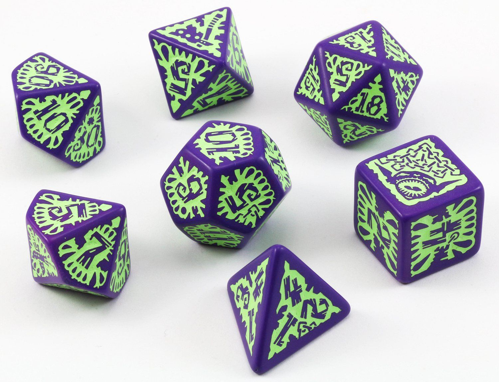

The main book you need to play is simply the Core Rulebook, either first or second edition! Besides
that, there are other books that add more things to the game for either the Game Master or the
player!

Don't forget your dice!
There is no way you could possibly play Pathfinder if you don't have dice! You need at least a set,
which typically contains a d20, a d12, a d10, a d8, a d6, a d4, and a d% which gets rolled with a
d10 to roll a percent! If you don't have these, then you can basically only talk or move!
You might want some of these too!
While these aren't all necessarily required, you might want some writing supplies, including pencils,
notebooks, pens, colored pencils, etc!
Pathfinder
Pathfinder is a roleplaying game created by Jason Bulhamn that became published in 2009. The game uses
the same mechanics as Dungeons and Dragons 3.5 edition, but bought the rights and created their own
system, which to most players is known as 3.75 edition. The game uses the d20 system much like Dungeons
and Dragons. The game underwent a lot of private and public development with even at one point, Paizo
took in user feedback about the game before it officially got published.